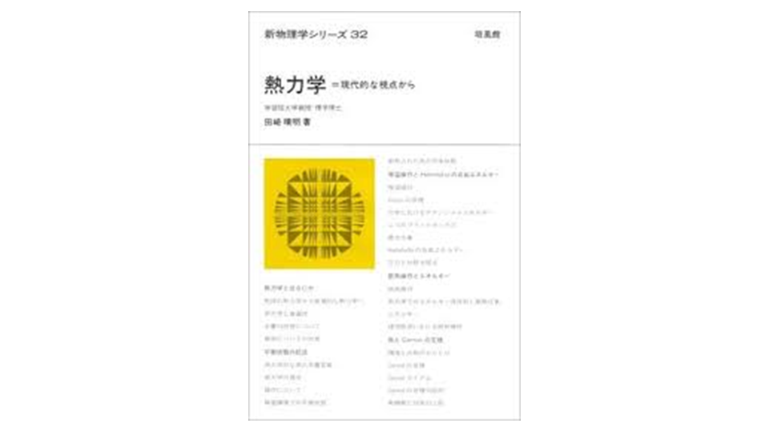

熱力学
いわゆる「田崎 熱力学」と呼ばれている本。
断熱操作と等温操作という2つの過程を利用し、前者から内部エネルギーUが、後者からヘルムホルツ自由エネルギーが定義される。そして、その差分としてエントロピーが定義され、自由エネルギーの基準点の任意性を利用して、「エントロピー最大化」という重要な性質が付加されることを見る。
定義から性質を導出するという演繹法にのみ基づいて、熱力学の様々な状態関数を関連させて学べる本。
9章に入ると電荷を輸送する操作でネルンストの式が導出できたり、反応進行度ξの停留点として質量作用の法則やルシャトリエの原理など化学に関連する部分も理解できる。
2022/03に読了